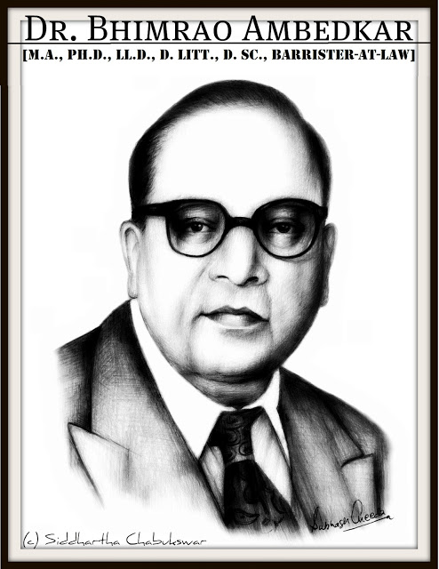

|
Born:14 April 1891 Mhow, Central Provinces, India (now in Madhya Pradesh) Died:6 December 1956 (aged 65)Delhi, India Alma mater:University of Mumbai,Columbia University, University of London, London School of Economics Spouse: Savita Ambedkar (m. 1948–1956), Ramabai Ambedkar (m. 1906–1935) Religion: Hinduism (1891-1935),Buddhism (1935-1956) Awards: Bharat Ratna |
 |
|
Dr. Bhimrao Ramji Ambedkar (14 April 1891 – 6 December 1956), popularly known as Babasaheb , was an Indian jurist, economist, politician and social reformer who inspired the Modern Buddhist Movement and campaigned against social discrimination against Untouchables (Dalits), while also supporting the rights of women and labour. He was Independent India's first law minister and the principal architect of the Constitution of India. Ambedkar was a prolific student, earning a law degree and various doctorates from Columbia University and the London School of Economics, and gained a reputation as a scholar for his research in law, economics and political science. In his early career he was an economist, professor, and lawyer. His later life was marked by his political activities; he became involved in campaigning and negotiations for India's independence, publishing journals advocating political rights and social freedom for Dalits, and contributing significantly to the establishment of the state of India. In 1956 he converted to Buddhism, initiating mass conversions of Dalits. In 1990, the Bharat Ratna, India's highest civilian award, was posthumously conferred upon Ambedkar. Ambedkar's legacy includes numerous memorials and depictions in popular culture.Ambedkar was born on 14 April 1891 in the town and military cantonment of Mhow in the Central Provinces (now in Madhya Pradesh). He was the 14th and last child of Ramji Maloji Sakpal, a ranked army officer at the post of Subedar and Bhimabai Murbadkar Sakpal. His family was of Marathi background from the town of Ambavade (Mandangad taluka) in Ratnagiri district of modern-day Maharashtra. Ambedkar was born into a poor low Mahar (dalit) caste, who were treated as untouchables and subjected to socio-economic discrimination. Ambedkar's ancestors had long worked for the army of the British East India Company, and his father served in the British Indian Army at the Mhow cantonment. Although they attended school, Ambedkar and other untouchable children were segregated and given little attention or help by teachers. They were not allowed to sit inside the class. When they needed to drink water, someone from a higher caste had to pour that water from a height as they were not allowed to touch either the water or the vessel that contained it. This task was usually performed for the young Ambedkar by the school peon, and if the peon was not available then he had to go without water; the situation he later in his writings described as "No peon, No Water". He was required to sit on a gunny sack which he had to take home with him. Ramji Sakpal retired in 1894 and the family moved to Satara two years later. Shortly after their move, Ambedkar's mother died. The children were cared for by their paternal aunt, and lived in difficult circumstances. Three sons – Balaram, Anandrao and Bhimrao – and two daughters – Manjula and Tulasa – of the Ambedkars would go on to survive them. Of his brothers and sisters, only Ambedkar passed his examinations and graduated to high school. His original surname Ambavadekar comes from his native village 'Ambavade' in Ratnagiri district. His Brahmin teacher, Mahadev Ambedkar, who was fond of him, changed his surname from 'Ambavadekar' to his own surname 'Ambedkar' in school records.
In 1897, Ambedkar's family moved to Mumbai where Ambedkar became the only untouchable enrolled at Elphinstone High School. In 1906, when he was about 15 years old, his marriage to a nine-year-old girl, Ramabai, was arranged.In 1907, he passed his matriculation examination and in the following year he entered Elphinstone College, which was affiliated to the University of Mumbai, becoming the first untouchable to do so. This success evoked much celebration among untouchables and after a public ceremony, he was presented with a biography of the Buddha by Dada Keluskar, the author and a family friend. By 1912, he obtained his degree in economics and political science from Bombay University, and prepared to take up employment with the Baroda state government. His wife, by then 15 years old, had just moved his young family and started work, when he had to quickly return to Mumbai to see his ailing father, who died on 2 February 1913. Since 1948, Ambedkar had been suffering from diabetes. He was bed-ridden from June to October in 1954 owing to clinical depression and failing eyesight. He had been increasingly embittered by political issues, which took a toll on his health. His health worsened as he furiously worked through 1955. Just three days after completing his final manuscript The Buddha and His Dhamma, it is said that Ambedkar died in his sleep on December 6, 1956 at his home in Delhi. |